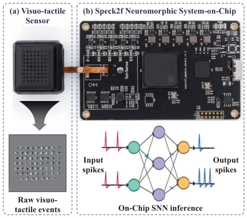
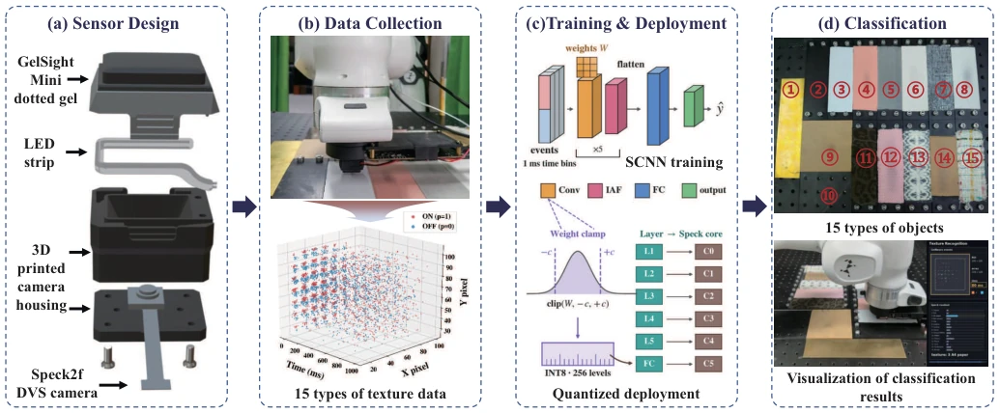
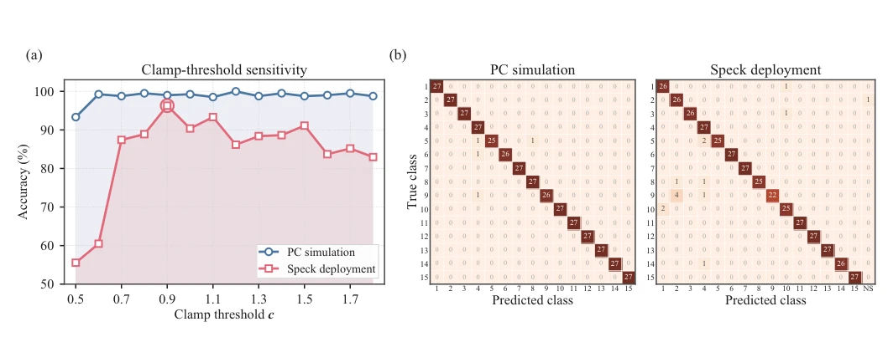
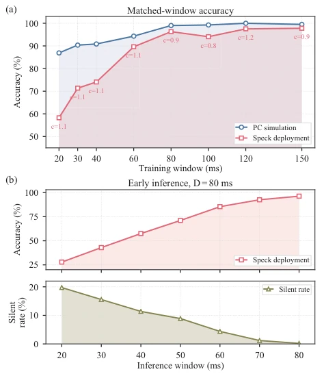
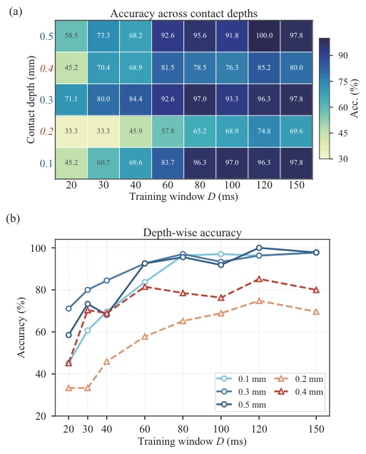
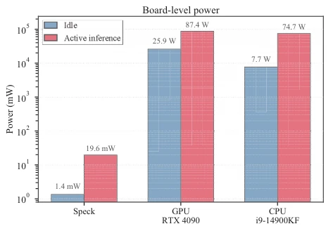

This paper implements an end-to-end tactile neuromorphic system, directly integrating GelSight and Speck2f, which is indeed impressive. The biggest selling point is eliminating host preprocessing and performing direct on-chip inference; power consumption is extremely low, which is a lifeline for edge robots. However, one should not be too optimistic, as it still relies on offline training, and during online inference, it still depends on 1ms binning to forcibly discretize asynchronous events, which somewhat runs counter to the true asynchronous nature. Moreover, although the accuracy loss brought by INT8 quantization is somewhat alleviated by weight clipping, it is still far from perfect, after all, noise and thermal drift on silicon cannot be completely eliminated by a few mathematical tricks. Overall, it is an excellent engineering integration case, but the neuromorphic purity at the algorithmic level remains debatable, more like putting a neuromorphic coat on a traditional architecture.
Although existing neuromorphic tactile systems use event cameras, most still adopt a sensor-host-chip architecture; event data must first be transmitted to the host for preprocessing and then back to the chip, where data movement has become a bottleneck, wasting the latency and power advantages of event-driven systems. Additionally, when mapping high-precision float models to low-bit hardware, quantization noise will severely reduce accuracy. This paper aims to solve these two pain points: one is to eliminate host preprocessing and achieve true sensor-to-chip direct connection; the second is to address accuracy degradation caused by quantization through hardware-aware strategies, enabling neuromorphic tactile perception to truly run on resource-constrained edge devices.
The system core is the direct coupling of the GelSight Mini optical tactile frontend and the Speck2f neuromorphic SoC. Contact causes gel surface marker motion, DVS directly outputs asynchronous event streams, sent via on-chip network to the on-chip SCNN classifier, with no host intervention throughout the process. The network adopts a 5-layer convolution plus 1-layer fully connected structure, using non-leaky IAF neurons. The key innovation lies in the hardware-aware deployment process: during training, 10% random input masks are introduced to enhance robustness, and a weight clipping strategy is adopted, where weights are symmetrically truncated after training, then mapped to the INT8 range, effectively suppressing quantization noise. During inference, the event stream directly enters the compute core through the on-chip pre-processing module, without frame buffering, achieving true asynchronous on-chip inference. Additionally, to adapt to the 9 on-chip processing cores, the network removes bias terms to match compute graph constraints, and adopts an overdrive initialization strategy to solve the problem of insufficient spike firing in early training, ensuring gradient flow can be smoothly transmitted to the deep network.

Fig. 1. GelNeuro tactile perception pipeline. (a) A visuo-tactile sensor is directly interfaced with the Speck2f neuromorphic SoC, which captures raw event frames accumulated from marker motions on the gel surface. (b) The Speck2f neuromorphic SoC handles edge computing, executing on-chip SCNN processing of the event stream with spike trains serving as both the input and output representations.

Fig. 2. System overview and experimental workflow. (a) Exploded view of the tactile module: GelSight Mini dotted gel, COB LED strip, 3D printed camera housing, and Speck2f DVS module. (b) Robotic sliding setup and representative event stream from marker motion on the gel surface. (c) Training and deployment pipeline with 1 ms event binning, hardware-aware weight clamping, INT8 quantization, and layer-to-core mapping on Speck2f. (d) Numbered texture set and visualization of classification results. The 15 texture classes are: 1 copper, 2 Polylactic acid, 3 A4 paper, 4 non-woven fabric, 5 silk, 6 leather, 7 fashion fabric, 8 cotton, 9 filmed acrylic, 10 acrylic, 11 fleece, 12 piqu´e, 13 lace, 14 cardboard, and 15 burlap.

Fig. 4. Hardware-aware weight clamping for on-chip INT8 deployment. (a) Accuracy versus clamp threshold c at D = Tinfer = 80 ms for PC simulation and Speck deployment. (b) Confusion matrices at c = 0.9; PC and Speck accuracies are 99.0% and 96.3%, respectively. NS denotes no decision spike.
Tested on a 15-class natural texture dataset, achieving 96.3% accuracy within an 80ms inference window. In terms of power consumption, board-level active power is only 19.6mW, three orders of magnitude lower than the CPU/GPU baseline. Ablation experiments show that accuracy is optimal when weight clipping threshold c=0.9. In generalization tests, it still maintains high accuracy under unseen contact depths, proving the model decoupled texture features from depth dependency. However, the silence rate reaches as high as 19.8% during early inference, indicating insufficient chip integration time under extremely short windows, limiting the real-time upper bound. Compared to PC simulation, hardware deployment accuracy decreases slightly, mainly attributed to quantization error and circuit noise, but overall it is still superior to traditional schemes.

Fig. 3. Effect of temporal windows on texture classification. (a) Matched training/evaluation window D; labels denote Speck clamp thresholds. (b) Early inference with the D = 80 ms model as Tinfer is shortened; silent rate denotes samples without an output-layer decision spike.

Fig. 5. Cross-depth evaluation of on-chip texture recognition. (a) Speck accuracy for each contact depth and training window. (b) Depth-wise accuracy trends. Depths of 0.1, 0.3, and 0.5 mm are used for training; 0.2 and 0.4 mm are held out for zero-shot depth generalization.

Fig. 6. Board-level idle and active-inference power. Speck is compared with CPU and GPU baselines under the 80 ms inference setting; power is plotted in mW on a logarithmic scale.